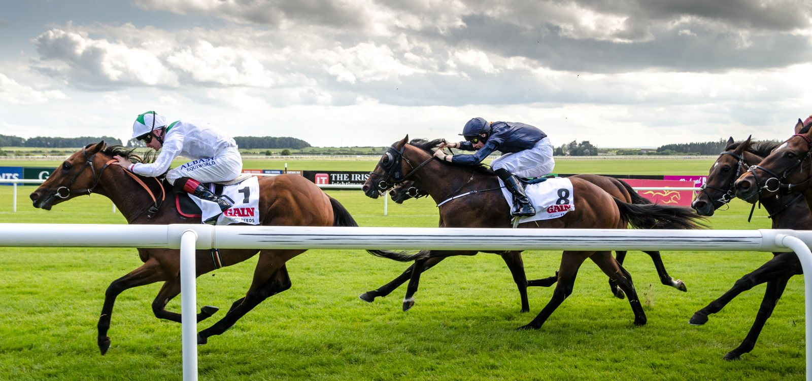

Daryz repite en el Arc, algo que ningún macho lograba desde Alleged en 1978
Daryz ganó el domingo su segundo Qatar Prix de l'Arc de Triomphe consecutivo en ParisLongchamp. Ningún macho repetía en la gran carrera de Europa desde Alleged, que lo hizo en 1977 y 1978.

Daryz ganó el domingo su segundo Qatar Prix de l'Arc de Triomphe consecutivo en ParisLongchamp. Ningún macho repetía en la gran carrera de Europa desde Alleged, que lo hizo en 1977 y 1978.
El potro de cuatro años, preparado por Francis-Henri Graffard para la familia Aga Khan, salió como favorito (13-8) entre dieciséis partantes. Mickael Barzalona lo sacó por fuera a 400 metros de la meta sobre los 2.400 metros de pista buena, y desde ahí se fue a por Bay City Roller, al que batió por un cuerpo y cuarto. La potranca de tres años Diamond Necklace, de Aidan O'Brien, fue tercera a un cuello. Friendly Soul y Kalpana completaron los cinco primeros.
Fue una repetición del Prix Foy de septiembre, donde Daryz y Bay City Roller ya habían llegado en ese orden. «El ritmo no fue fuerte, fue una carrera dura y nada salió según lo previsto, pero el caballo merecía ganar otra vez», explicó Barzalona.
El hijo de Sea The Stars y Daryakana suma ya 12 victorias, nueve segundos puestos, un tercero y un cuarto. Todo apunta a que no habrá un tercer Arc. «Lo dudo mucho. Tiene otras obligaciones que cumplir. Cada vez que corre hay un riesgo», dijo su propietaria, la princesa Zahra Aga Khan. Graffard admitió que le gustaría intentarlo: «Ojalá me dejaran ganar la carrera con él por tercera vez, pero no creo que me lo permitan».
El jockey guipuzcoano Ioritz Mendizabal terminó duodécimo con Arrow Eagle, el último corredor de Jean-Claude Rouget en el Arc. Japón siguió sin ganarlo: Admire Terra fue undécimo y Meisho Tabaru, decimocuarto.
Graffard ya se había llevado ese mismo día el Prix Jean-Luc Lagardère con la potranca Amusingly.
Fichas: I. Mendizabal (jinete)
— Redacción de Galope al Día